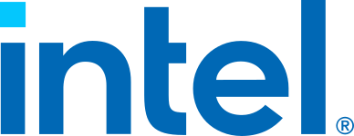

Ranglister Halvledere Intel

Intel
44
15070100
Et blik på de samme fund, ikke en ny score. Sådan virker det
Modellen fandt flere alvorlige problemer. Det betyder ikke, at aktien vil falde.
Største fradrag
- Multipler mod egen historik og peers−32
- Udvanding−7
- Margin−6
Styrker
- Eksekvering+2
- Insiderkøb+2
- Foundry-kunder+2
Sådan er scoren bygget op
Fra 100 til 44, trin for trin: point trækkes fra for forretningen, prisen og revnerne, lægges til for dokumenterede styrker, og så følger tre datajusteringer.
Start
Score
Hold musen over et trin eller vælg det for at se, hvad der drev det. Trin med fund åbner dem nedenfor.
Nøgletal
Pr. 6 nov. 2026. Analytikernes kursmål er ofte optimistiske; læs opsiden som et fingerpeg, ikke en prognose.
- Pris
- 56.28 USD
- Analytikernes mediankursmål
- 88.00 USD
- Opside til median
- +56.4%
- Analytikere
- 49
- Kursmålsinterval
- 63.00 – 160.00 USD
- 52-ugers ændring
- +47%
- P/E (historisk)
- n/a
- Forward P/E
- 40.4
- PEG
- 0.54
Fund
Hvert fradrag og hvert plus med sin kilde. Åbn et trin for at læse dem.
Forretning
Bliver virksomheden stærkere, ikke bare større? · 4 fund−18 af −30
- −6MarginDriftsmargin 7,8 % TTM (11,1 % GAAP i Q2) og bruttomargin 38,9 % mod 27,9 % og 55,5 % i 2021. Nettomarginen på −19,8 % er forvrænget af en ikke-kontant opskrivning på 12,5 mia. $ af de CHIPS-aktier, der står i escrow til staten, så driften er ikke underskudsgivende. Marginen er stadig langt under både fortiden og peers.
- −5ROICROIC 3,4 % TTM mod 20,4 % i 2021 og ca. 0 % i 2023–25, langt under en WACC på 15 %. Den enorme fabrikskapital giver endnu ikke afkast.
- −4Fremtidens segmentIntel Foundry havde et driftsunderskud på 2,1 mia. $ i Q2 på 5,8 mia. $ i omsætning, og kun 293 mio. $ kom fra eksterne kunder. Risikoproduktion på 14A ventes først i 2. halvår 2027.
- −3KapitalallokeringCapex er hævet til over 20 mia. $ i 2026 (+ca. 3 mia. $) og skal være 'markant højere' i 2027. Kapaciteten bygges før eksterne volumener er sikret og finansieres med ny egenkapital; analytikerne venter FCF på −1,3 mia. $ i 2026.
Pris
Dagens multipler mod selskabets egen historik og dets sammenlignelige selskaber. · 1 fund−32 af −35
- −32Multipler mod egen historik og peersForward P/E 69 mod egen forward-historik på 14–29 (2021–24) og 85 (2025); P/S 10,7 mod 1,7–3,9 (2021–25); EV/EBITDA 37 mod 6,3–24,8; P/B 6,7 mod 0,8–2,2; P/FCF 215. Aktien er +227 % på 52 uger og handles på det dobbelte til tredobbelte af sin egen historik på alle mål.
Revner
Cash flow, kunder, gæld, insidere, guidance og det, der ligger bag hovedtallene. · 5 fund−16 af −35
- −7UdvandingAktietallet er steget 13,3 % på et år (staten ca. 10 %, Nvidia, SoftBank). Den 10/8 kom en emission, der blev øget til 20 mia. $ til 95 $ pr. aktie (ca. 210 mio. aktier), og yderligere CHIPS-aktier står i escrow til staten.
- −3KonkurrenceIntels andel af x86-CPU-markedet faldt under 70 % i Q2 (AMD vinder), og Apple har meddelt udviklere, at understøttelsen af Intel-Macs kan ophøre.
- −2Forsyning og makroLedelsen melder om alvorlige flaskehalse i wafers, hukommelse, substrater og avanceret pakning, og PC-markedet ventes at falde lavt tocifret i 2026. Væksten er skubbet mod slutningen af Q3 og ind i Q4.
- −2GældBruttogæld 50,5 mia. $ og nettogæld 20,6 mia. $ pr. 30/6 (før emissionen på 20 mia. $); rentedækning 3,9x og Altman Z 2,23.
- −2GovernanceDen amerikanske stat ejer ca. 10 % og har politisk indflydelse på strategien. Escrow-aktierne til handelsministeriet giver store regnskabsudsving: jo højere kursen er, desto større bliver det bogførte tab.
Plus
Kun dokumenterede styrker. · 3 fund+6 af +15
- +2EksekveringQ2-omsætningen var 16,1 mia. $ (+25 % år over år), 1,8 mia. $ over midten af guidance; det er syvende kvartal i træk over forventning. DCAI voksede 59 % med 40 % driftsmargin, og non-GAAP EPS var 0,42 $ mod guidet 0,20 $.
- +2InsiderkøbCEO Lip-Bu Tan købte 105.263 aktier for 10 mio. $ til 95 $ den 11/8 (via familietrust, til emissionskursen).
- +2Foundry-kunderMicrosoft har en flerårig 18A-waferaftale, og Apple har ifølge medierne aftalt at få produceret M7 på 18A-P fra slutningen af 2027 (ikke bekræftet af selskaberne).
Forbehold
Det, scoren ikke fanger, eller hvor dataene er svage.
GAAP-underskuddet (−11 mia. $ i Q2) skyldes en ikke-kontant opskrivning på 12,5 mia. $ af de CHIPS-aktier, der står i escrow til staten; driften giver overskud. Aktien er +227 % på et år med forward P/E 69, og median-kursmålet ligger under kursen. Aktietallet er +13 % og kommer ikke med emissionen på 20 mia. $ fra august. Apple-aftalen om 18A-P er kun omtalt i medierne.
Også i Halvledere
De højeste scorer i samme branche.